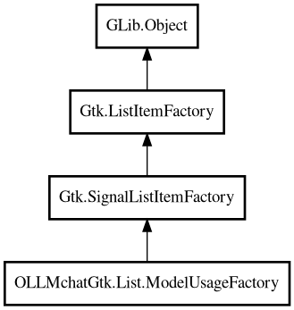

ModelUsageFactory
Object Hierarchy:

Description:
public class ModelUsageFactory : Object
Factory for creating list items from ModelUsage objects.
Creates list items that display ModelUsage objects with: - Icons for capabilities (tools, thinking) - Model name with size (using
display_name_with_size())
Can be used with Gtk.ListView, Gtk.DropDown, and other list widgets. Access the factory via the .factory property.
**IMPORTANT:** This class must be stored as a property of the widget or object that uses it. If stored as a local variable, it may be
garbage collected and the signal connections will be lost.
Since:
1.0
Content:
Properties:
Creation methods:
Inherited Members:
All known members inherited from class GLib.Object
- @get
- @new
- @ref
- @set
- add_toggle_ref
- add_weak_pointer
- bind_property
- connect
- constructed
- disconnect
- dispose
- dup_data
- dup_qdata
- force_floating
- freeze_notify
- get_class
- get_data
- get_property
- get_qdata
- get_type
- getv
- interface_find_property
- interface_install_property
- interface_list_properties
- is_floating
- new_valist
- new_with_properties
- newv
- notify
- notify_property
- ref_count
- ref_sink
- remove_toggle_ref
- remove_weak_pointer
- replace_data
- replace_qdata
- set_data
- set_data_full
- set_property
- set_qdata
- set_qdata_full
- set_valist
- setv
- steal_data
- steal_qdata
- thaw_notify
- unref
- watch_closure
- weak_ref
- weak_unref